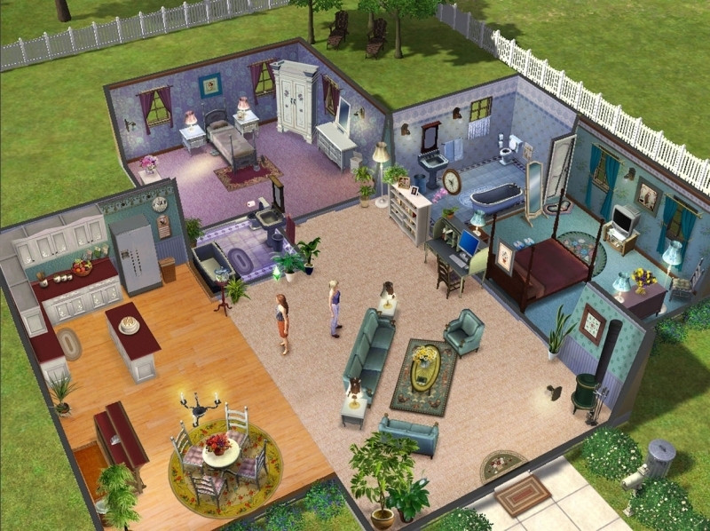

2000
SIMS
Will Wright's The Sims was released in 2000, allowing players to create and control virtual people in a simulated world. The game became a cultural phenomenon and spawned numerous expansions and sequels, making it one of the best-selling PC games of all time.

PRESS START TO CONTINUE